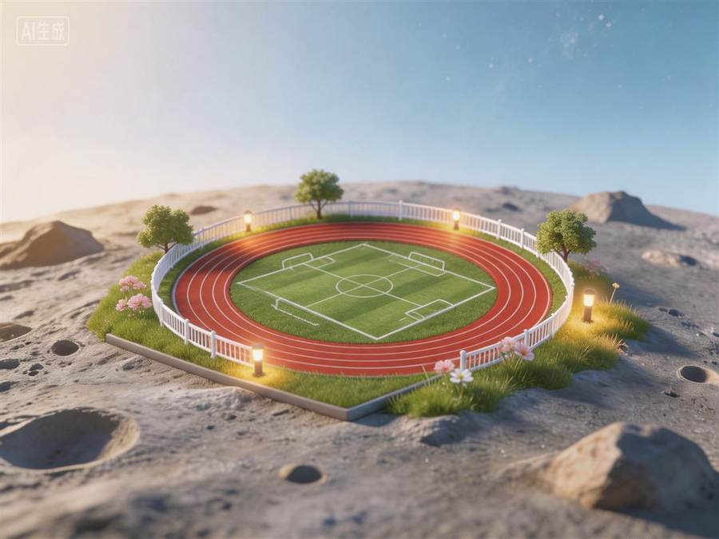
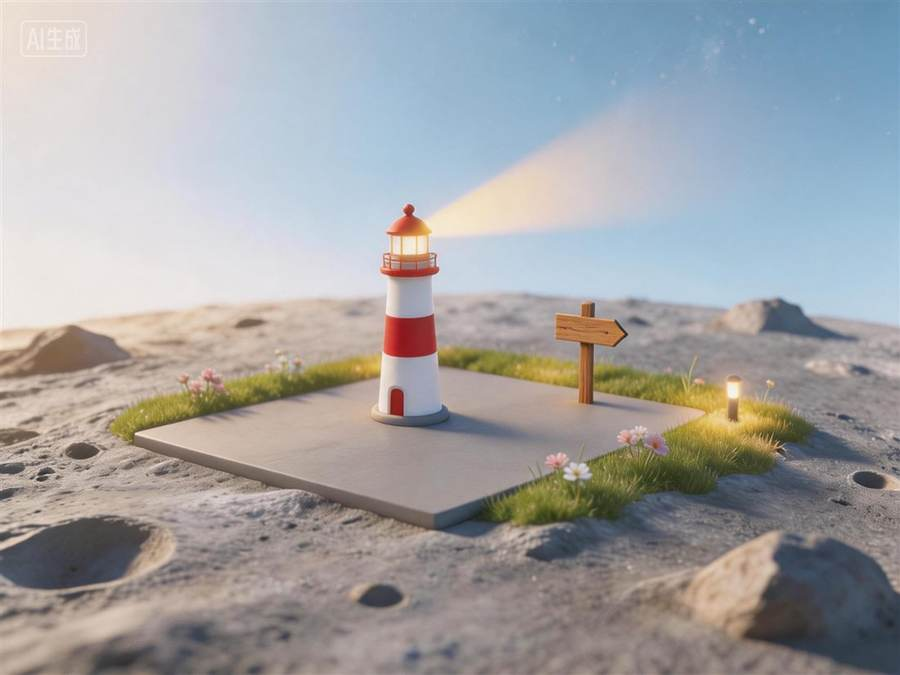
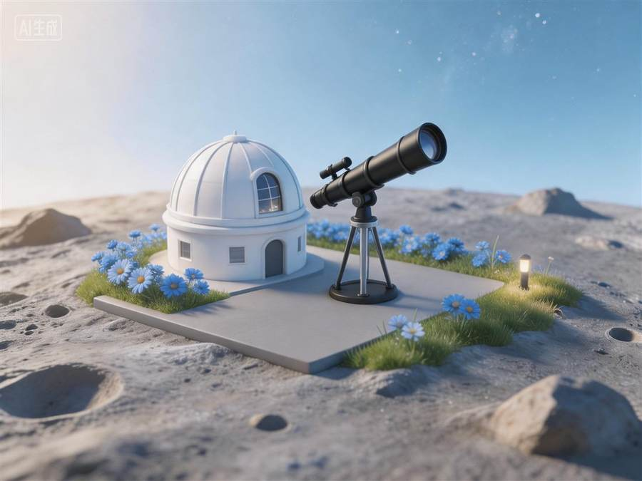

下一个项目预留位
等新项目完成后，这里可以补充项目定位、技术栈、核心职责、难点解决和最终成果，保持展示页结构完整。
About
这个个人网站用于展示我的项目、技术栈和简历。相比只写课堂作业，我更想完成一个别人打开后能理解、能体验、 能继续迭代的项目：从需求拆解、交互设计、素材管理、数据结构、云函数到测试部署，都尽量走完整流程。
Featured Project
星球养成式自律打卡微信小程序，把运动、饮食、学习、工作、计划、睡眠六类行为转化为星球生态成长。






Next
等新项目完成后，这里可以补充项目定位、技术栈、核心职责、难点解决和最终成果，保持展示页结构完整。
Skills
Resume
重点突出星途自律舱项目、CET-6、入党积极分子和软件开发基础能力。